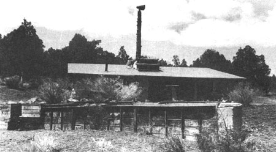
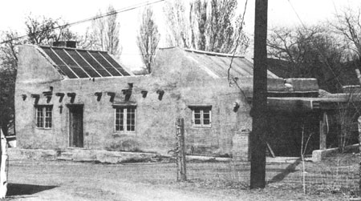

Peter Van Dresser: Ecologist
A Plowboy Interview with Peter Van Dresser, a man with a lifelong interest in technology and its applications within the framework of an ecological consciousness.
By the Mother Earth News staff
September/October 1975
The following interview was originally published two years ago in the October 1973 issue of LIFESTYLE! (a former-and much less widely distributed-sister publication of THE Mother Earth News (restricted) ).
The interview is being reprinted here (at John Shuttleworth's request, as explained on the preceding two pages) because [1] far too few individuals saw the piece in LIFESTYLE! and [2] far too few of today's "ecologists" and "alternative lifestyle pioneers" have the slightest inkling of what the low-energy, self-sufficient society of the future will really have to be like if the planet is to have any chance of surviving.
Fortunately for us all, a handful of thoughtful philosophers and thinkers and doers do have a reasoned concept of the tremendous-and necessary-changes in living patterns which we must all make if Earth is to endure. Peter van Dresser is one of those philosophers and thinkers and doers . . . and many more of today's citizens especiaIly those who fancy themselves "environmental pioneers" of one stripe or another would do well to study the man's work.
Solar energy, wind power, humanitarian, ecology, alternative lifestyle and related freaks of 1973 . . . please take note: You didn't-as you sometimes seem to believe-invent all those groovy fields of interest overnight all by yourselves alone. Other-and occasionally better-men and women were trying to "put it all together" a long time before it became fashionable (or even possible) to do so.
One of those who've gone ahead is Peter van Dresser, a man with a lifelong interest in technology and its applications within the framework of an ecological consciousness. At various times in his life, Mr. van Dresser has been-among other things-a writer of science fiction, a professional regional and urban planner, a member of the Decentralist movement of the 1930's, a pioneer in the development of rocket engines and a near-total dropout from our military-industrial society.
In 1949, van Dresser moved to a small village in the mountains of northern New Mexico. There he opened a little restaurant, designed and built solar-and wind-powered houses and began working in earnest for the development of decentralized, self-sufficient communities which "make use of sophisticated technology to produce a high standard of living, yet exist harmoniously with the natural world around them".
Peter van Dresser's vision of the community of the future may sound utopian to some . . . but it's based on pure common sense and a lifetime of experience. Peter's ideas stated in detail in his book, Landscape for Humans, have had a profound influence on a whole generation of counterculture experimenters and designers (see the Steve and Holly Baer interview.
James B. DeKorne-an avid wind power, back-to-the-land and alternative lifestyle enthusiast in his own right-recently visited Peter van Dresser at his home in the mountains of northern New Mexico. The following interview is taken from the tapes of their conversation.
PLOWBOY: Peter, you were calling for an ecologically sound approach to living long before the word "ecology" became a cliche . . . you were speaking and writing about the subject way back in the thirties. Why? How did you get so involved with environmental thought nearly 40 years before it was the thing to do?
VAN DRESSER: Well, in my youth I had some kind of built-in reaction against the Establishment . . . against the excesses of industrialization and its consequent dehumanization of life. In my early teens, my father took us on long summer camping trips to New England or Canada. New England and Canada were both much more rustic in those days and I had long exposures to an idyllic summer existence in the country. We had contact with villages and small towns, and it was always rather traumatic-after three or four months of such experience-to come back to New York City.
I guess this was what very early made me aware of the oppressive quality of excessive urbanism, and all my daydreams were about how not to have to live that way. I had the usual plans, as a young man, for sailing around the world and settling in the South Sea Islands, which is what a lot of people go through (laugh). I did go so far as to acquire a boat and I lived on it for several years.
PLOWBOY: Where was that?
VAN DRESSER: Well, we started in Maine and ended up in Florida. It was a very delightful period, and I learned a lot living aboard that 32-foot ketch.
PLOWBOY: I've noticed that the houses you've built since then have a certain yacht like quality. 'Every square inch is utilized, and everything has its place.
VAN DRESSER: (laughs). Well, I suppose boat living did have that effect on me. I learned various skills . . . carpentry and mechanics, the proper storage of supplies and that sort of thing. In general, the management of a small economic entity takes foresight and planning. The whole operation forces you into difficult situations sometimes . . . it teaches you how to operate a micro-economy.
PLOWBOY: That sounds like good training for ecological living . . . .
VAN DRESSER: Absolutely. It requires you to adjust yourself to the natural cycles: what the tides are doing, what to expect in the way of weather during the next few days, etc.
PLOWBOY: When you weren't sailing, where did you live?
VAN DRESSER: In Florida we just found places to tie up along the river. We lived a kind of Polynesian-type life in those days and examined a lot of the values which are being experimented with now.
PLOWBOY: For instance?
VAN DRESSER: Well, for years we never went to bed on nights of the full moon. Instead, we'd go down and spend all night on the beach somewhere. We examined spontaneous experiences of that nature . . . but it was a lot simpler then than now.
There were no drugs involved then. There wasn't any need for drugs. We were able to have a great deal of psychedelic pleasure without them . . . just singing and building a fire up on the beach, watching the surf come in, swimming, telling stories, making music, that sort of thing. As far as breaking out and living a nature-oriented life, we did it . . . but it didn't have the whole overtone of anxiety, defiance and anger Which seems to be all mixed up with it now.
PLOWBOY: Are there still places like that in Florida . . . where you can keep a boat for almost nothing?
VAN DRESSER: No, no. This was during the 30's . . . the quiescent period between the boom of the 20's and the economic expansion that came later with the Second World War. We were living a mile or two north of Ft. Lauderdale and the beaches up and down the coast were just deserted. There were miles of abandoned developments . . . . crumbling paving and street lights that never burned.
PLOWBOY: Sort of a depopulated area . . . .
VAN DRESSER: In a way. But there were still substantial vestiges of the older period of pre-war settlement, too . . . when people built pleasant homes of coquina rock and native pine. The 1920's boom had subsided but one could see, as the war approached, the second boom starting to build.
PLOWBOY: Would you like to return to Florida?
VAN DRESSER: No, I have no desire to go back there now. To me, Florida is completely lost . . . ruined.
PLOWBOY: Could you speculate a little about the land boom now underway here in New Mexico? Do you think this area will be raped the way Florida was?
VAN DRESSER: It's well on its way, I think . . . once again, unless our total economic orientation changes, there are going to be these enormous pressures for recreation, and so-called "leisure fun" developments and all that sort of thing. The point is, that as we make vast metropolitan areas uninhabitable, the people who live in those cities are just desperately driven out into synthetic "fun areas". There are huge financial interests ready to exploit this, of course.
PLOWBOY: I hear that (name of local land development firm) is bankrupt.
VAN DRESSER: Yes, that's a piece of good news but, on the whole, I tend to be cautious and pessimistic about it. The development will probably just be picked up by another syndicate in a few years.
The saddest thing about these promotions, I think, is that the local culture doesn't have any strong resistance against them. The old values are mainly latent and passive, in my observation, and the people who embody them are not strongly enough convinced of their worth to fight for them. They've been told for so many years that these old values are obsolete and inadequate that they're very apologetic about them and won't fight for them. That's quite sad because, although the local culture is basically sympathetic to what we're talking about, it doesn't have the stamina-the fighting resistance to stand up against what seems to be an inevitable wave of development.
PLOWBOY: Well, what about the whole Chicano movement . . . La Raza, the Brown Berets? Do you think they're going in the direction of some approximation of the old values, or are they heading toward a modification of the Anglo-industrial value system?
VAN DRESSER: I think there are a few elements of the Chicano movement that do embody some of the old values; I think Reis Tijerina's original concepts, "Pueblas Unidas," etc., were quite well related to such ideas . . . but he's become a minority voice. The new, more militant movement is-to me-a movement for political power that doesn't essentially visualize any real change in the economy . . . only that Spanish-speaking people should have a larger piece of the same pie. This, to me, is not very satisfying . . . it just means the same thing-a continued rape of the land-being done in Spanish rather than English.
PLOWBOY: For those who aren't familiar with New Mexico, could you talk a little about the old values which you found preserved here? How are they different from those found in other regions of the country and why are they important?
VAN DRESSER: Well, the region I'm speaking about is a mountainous enclave in northern New Mexico and southern Colorado. It was settled by Spanish colonists in the 17th, 18th and early 19th centuries . . . during a period when a localized village economy had to be the dominant economy. Then, of course, there was not the large-scale transport and power technology we have today . . . and the settlement pattern in this area-which is about the size of Switzerland-was that of a land-based village economy.
For centuries this section of the nation was isolated from the general march of "progress" in the United States, so that its old way of life and the social institutions that went with it-was maintained well into the 20th century. Such a pattern still characterizes the region to a certain extent, and is in sharp contrast to the Texas-style commercial ranching which began pushing into the area in the latter part of the 19th century.
All this, of course, implies a whole lot of human values . . . a way of life which is slower-paced, more tuned to natural cycles and more aware of the earth and the biological processes. It results, finally, in more humane relations between people.
My feeling is that the essential elements of this old pattern are still valid, despite the tendency among sociologists and "progressive" reformers in general to call this a problem region and to say that these values are obsolete and must be replaced by urban ideals. I think we've come to the point where we must realize that this is not the whole story. Many components of this value system are necessary ingredients for a real ecologically adapted future society. We can build on these values constructively, rather than consider them obsolete and push them aside.
PLOWBOY: This idea you're hinting at-the need for land-based, self-sufficient communities-was a major theme of the Decentralist movement of the thirties. Since you were involved in that movement, could you tell us something about it?
VAN DRESSER: Oh, yes. This is something that should be better known. In that period, which of course was the time of the depression, there was a widespread semi-political, semi-economic movement for decentralization . . . for breaking out of the metropolitan syndrome. We had meetings and conferences and published a magazine, Free America, that carried a lot of articles about the destruction of the environment, returning to the land, self-sufficiency, the simple life and so on. I was very active in the movement, and wrote quite a bit for Free America.
PLOWBOY: I've read some of the things you produced for that magazine in 1938, and they sound as though they were written today!
VAN DRESSER: (laughs). Yes. Nothing much has changed . . . it's just gotten more so. We were pretty unhappy then about the excessive concentration of population and wealth, the destruction of the environment and all that sort of thing.
Those who are interested in these problems nowadays should be aware of the Decentralist movement. A lot could still be learned from it. And of course you can go back much further than that to the whole Transcendental movement and the Utopian Community movement of the 1840's. Same thing.
The earlier Transcendental movement was amazingly similar to a lot of the stuff that's going on today, particularly the great interest its disciples had in Eastern philosophy. I even remember reading an account of the famous Brook Farm, the early commune, which told how the young men who were living there used to be harassed when they went to Boston because they wore berets and beards! (laughs). And this was in 1840! So very definitely there is a cyclic thing taking place here.
PLOWBOY: It sounds like a real American tradition.
VAN DRESSER: Well, I believe it is! The whole original Jeffersonian idea was for America to be settled in small, self-governing communities which were very much rooted in the land. They were only to be affiliated at the federal level for certain special purposes . . . but their control and economic autonomy would be local. That was the original American Dream, for heaven's sake! I guess it started breaking down around the Jacksonian period, when the power of money and big banking became dominant. I would say that this original concept is now a deep underlying current which has been submerged for a long time . . . but I hope it's coming back to the surface again.
PLOWBOY: Would you care to comment about the sudden renewal of interest in Decentralist ideas . . . about the people who are "dropping out" and the whole back-to-the-land movement?
VAN DRESSER: Well, I have mixed feelings about it. Certainly I welcome the revulsion against the Establishment and I welcome the recognition of a need for the development of alternative, more naturally adapted lifestyles. But my criticism is that, so far, today's movement has been too much based on the idea of escaping to a wilderness to "do one's own thing". I feel that this is not an adequate approach to the kind of transformation our society needs.
The new pioneering must be group, community and regional in nature. The new people have to be much more aware of their interrelations with society, not simply reject all society and try to attain a total self-sufficiency . . . which is nothing but a fantasy. They must be much more aware of the need for group efforts of various kinds and at various levels . . . the institutional environment within which we live and operate makes possible or impossible the development of a true ecologically adapted society. We can't just ignore this-because no matter how far back in the woods we go, and how much we pretend we're Indians, I mean, we just aren't -and we have to face up to these interreactions and group and organizational problems.
PLOWBOY: Uh, could you maybe elaborate a little on what you call the "fantasy" of total self-sufficiency . . . .
VAN DRESSER: Well, you can just approach it on a very simple level. You go off in the woods and, for instance, you have to have iron tools . . . fairly sophisticated implements. This all ramifies back into some sort of industrial complex. In order to have a good axe or a properly balanced shovel there have to be people who know where to dig the iron ore. There to be refineries, forges, and so forth and so on. There has to be a wholesome relation between you and the whole complex.
This extends to practically any field. I've yet to meet any of the socalled pioneers, for example, who produce a substantial portion of their proteins, carbohydrates and fats themselves. Everybody has a token garden, of course, which is very nice . . . but sooner or later they sneak down to Safeway and get the real main supply of provisions which keeps them going. This means commercial ranching, commercial farming . . . fairly sophisticated and complex specialization.
These specializations should certainly be on a much smaller scale, and should be on a community and regional level . . . but we can't pretend they aren't necessary. They are necessary. And the fantasy that you're being self-sufficient when you're not actually gets in the way of a real, alternative economy.
PLOWBOY: You'd say, then, that in our haste to repudiate the plastic aspects of modern living, we're ignoring a very real dependence upon the culture we think we've dropped out of . . . ?
VAN DRESSER: Yes. I'd also like to point out the tendency in the counterculture to lay excessive emphasis on technical or gadget solutions to a problem. There's a tremendous wave of interest now in solar heating and in the wind generation of electricity, which is good . . . but I still feel that the major problem is in restructuring our communities and our productive arrangements in such a way that the energy requirements are greatly reduced. Unless we do this, these new forms of non-polluting energy are not going to be able to meet our needs.
Here, again, we see the great gap between what we think we're doing and what we really are doing. As a simple example, you run into cases of wealthy dropouts who've jumped on the wind power bandwagon, and have imported a very expensive wind generator from Australia. They erect these symbolically over their dome or habitat . . . but at the same time they're running around the country in great big four-wheel-drive vehicles that burn more energy in one hour than the wind generator can produce in a week! It's a self-defeating pattern.
We must learn to live so that we don't place such heavy energy demands on the environment. If we do this, then wind generators and solar energy are beautiful . . . they will help. All I'm warning against is this old American notion that somewhere there's some wonderful gadget that'll solve all our problems for us.
PLOWBOY: The reorganization of society, then, is the lowest common denominator of the problem.
VAN DRESSER: I believe so. I think that the logistic inefficiency of modern society is so unbelievable that we don't even realize it. The bad relationship between production and consumption, the distribution of our population, the nature of our communities, the way people live in groups . . . all have built such enormous energy demands that it's no longer feasible to even dream of satisfying them with non-polluting sources. We're driven to atomic power and other idiocies. Until we really make the necessary basic social, demographic and logistic changes, we're fantasizing!
There used to be an old saying among aeronautical engineers that "if you use enough horsepower, you can make a kitchen sink fly!" That's the way our whole economy works; it's extremely unscientific. To speak as if this were a scientific society now is absolute nonsense! In terms of the main structure and function of our society, it's incredibly inefficient and unscientific. A decentralized, biotechnic society would, in a very real sense, be a much more scientific society than We have now.
PLOWBOY: Well, I must agree with you on that, but aren't we getting into a "which came first, the chicken or the egg" kind of situation? Don't you feel that the back-to-the-land movement may be the first wave of this new social organization that you envision? Many of us took this route, you know, because of our complete disillusionment with trying to change society. The Civil Rights and Peace movements of the 1960's taught us that the present. power structure isn't about to change . . . except, perhaps, by rotting from within . . . as Watergate has shown.
VAN DRESSER: Well, I wouldn't really disagree with that. I guess I'm just hypersensitive to what seem to me self-defeating tendencies amongst the so-called "new people" or counterculturists.
PLOWBOY: Peter, can you tell us a little bit about how and why you came to work with rockets? How you happened to be right there at the very birth of the Space Age . . . .
VAN DRESSER: Well, it was just something that was in the air in the early thirties. Even back then there was a lot of conjecture about the subject. Some research had been done, and there was some fairly extensive literature-mostly in French and German-and as a young man fascinated by the thrust of technology . . . well, it was one of the frontiers, and I was interested in it.
I translated Esnault-Pellerie's classical work, L'Astronautique, and learned a lot from that . . . even wrote some science fiction based on it. I joined the embryo American Rocket Society . . . which was the only group in America, outside of Goddard, that was doing actual physical research in the field. For a period of five or six years we were very active in the vicinity of New York, and we actually developed the first successful regenerative liquid fuel rocket motor in America.
Our early dreams, of course, were about space exploration. Colonizing Mars, and all that. It's amusing. A number of us were science fiction writers and we financed our work by pledging a major share of the income from every story we wrote to the Experiment Fund.
We were the only group in America that developed a reliable rocket motor before World War II. But then-as the war approached and it became obvious that the field would be dominated by the military-I dropped out and tried to disassociate myself from the whole thing. It's the ultimate in high technology-the Faustian drive and all that-and I finally reacted against it, went back to Florida, built a house at the edge of the Everglades and became interested in a simpler technology . . . .
PLOWBOY: Was this when you became involved with solar energy?
VAN DRESSER: Yes. One thing that may not be known is that there was a thriving industry in domestic solar water heaters back then. There were about fifteen companies in Florida and a number of other firms in southern California making the units at that time. The techniques had been worked out at a good practical level, and many thousands of the heaters were built and installed. Naturally, I got interested in this. I constructed a number of houses, and installed these systems in them. This was making use of a routine, existing technology that they had long ago.
PLOWBOY: So, in essence, a lot of people today are relearning something that was well figured out and documented in the 1930's?
VAN DRESSER: Absolutely! Of course, that was water heating only. It wasn't until I moved back north in the 40's that people in the field began to tackle the design of solar-powered space heaters. There was some very interesting work being done then, particularly by the Massachusetts Institute of Technology. There was the Cabot Foundation for solar research which financed various experimental houses in that area. The one built by Maria Telkes at Cambridge-I think that was right after the war-was a very early house using Glauber's salts for heat stor age.
I made a special trip to Cambridge to see that building and to talk to Dr. Telkes. When we moved to New Mexico, that was part of my agenda . . . to, as soon as possible, apply solar space heating to whatever home I should build here.
PLOWBOY: And, of course, you did.
VAN DRESSER: Yes, I did design an early biotechnic house as soon as we got settled in and began to function here in the Southwest. The dwelling was built of native materials-stone and timber-but made use of solar heating and a wind generator. I studied all the literature that was available and modified my plans a little to fit local circumstances. I put a great deal of effort into that pioneering house . . . and inevitably, I guess, made some basic mistakes in the design, which I now realize (laughs). At least I learned whatnot to do.
A few years later-this was about 1956, I guess-when we acquired a small adobe building in Santa Fe, I decided to make a second attempt at a solar-heated house. I applied everything I'd learned from home number one and all the newest ideas from other experimenters to that design. The house has been functioning with reasonable success ever since . . . about fifteen years.
I have still further ideas, but haven't had the opportunity to incorporate them into a structure yet. There are limits to what you can do. I've remodeled other homes, but it's difficult to take an existing old adobe and make it into a solar house . . . so I haven't had the chance to go on any further with my work. But I've kept abreast of developments. I know what I would do on the next house I build!
PLOWBOY: Peter, you've written a book- Landscape forHumans -that, in many ways, summarizes your thoughts about society, the ways in which it is organized and the manner in which its forces are used to make an individual's life either richer or poorer. How did that book come to be written?
VAN DRESSER: I guess my father started laying the foundation for Landscape for Humans when he took the family on those summer-long trips when I was a boy. It was quite unsettling, as I've mentioned, to come back to New York City after three or four months in the country . . . and just be completely overwhelmed by the slums and despoiling urbanism.
This bothered me then and it kept on bothering me. I wanted to know why -when we had set out to create the Jeffersonian American Dream-we had produced such a hideous landscape in so many parts of the nation. I've really spent my life looking for the forces that have caused this.
We came to New Mexico in 1949 because I felt that the Southwest was the one section of the country in which many of the old human values were still preserved. I needed these values-I was a kind of refugee-and I felt that perhaps it would be possible for me to make a contribution to New Mexico to help the people here avoid the same cycle of deterioration that was going on in the rest of the United States.
So we settled in this village and tried to learn and work and build ourselves a non-exploitive way of live. We supported ourselves by opening a small restaurant and serving, as nearly as possible, only locally produced foods.
PLOWBOY: That's interesting! You plunged right into, and made yourself a part of, the fabric of this little village's daily life. All too often, you know, people who want to study the workings of a microsociety tend to hold themselves apart from "the natives" who* live there.
VAN DRESSER: Well I've actually had a kind of three-level operation here. First, of course, was the very personal one on which I had to build my own habitat and try to survive economically. The next step up was where I exercised my interest in the local and regional situation. Finally, on the third level, I've worked to a degree with the State Planning Office and some agencies in Washington. This has all given me the opportunity to see the whole situation from several different points of view.
After twenty-odd years of studying this region and its values from the bottom, middle and top, I felt I had a case study I could-and should-present.
I feel that this area is a key region in the sense that it is a microcosm of the underdeveloped, or proto-industrial, world. The book is an attempt to summarize-in non-political language-my observations about the structure of the local economy, its function and the effects of existing policies-in business, finance, government and education-on the future of the human situation here. I make some suggestions as to how these policies could be modified so as to enhance the good qualities of our life, instead of destroy them. That's what the book is about. I don't believe any other comparable study which covers this range of factors for a significant region-exists.
PLOWBOY: Mr. van Dresser, thank you.
VAN DRESSER: And thank you.
 Peter van Dresser's first solar heated house (built in 1949 or 1950) has been vacant for several years and shows the wear and tear inflicted by vandals. The collector in the foreground was vented to the dwelling through underground ducts. The design was not entirely successful . . . the collector is too far from the house and its panels should be inclined rather than vertical. That's the remains of a Jacobs wind-driven generator on the pole behind the house and the ""dormer"" on the building's roof is actually a small room in which the self-contained electrical system's storage batteries were kept. |
 Peter's second sun-heated dwelling is a landmark in Santa Fe, New Mexico's Canyon Road district. The solar collectors (which were merely added onto an already existing adobe structure) are slanted to take maximum advantage of the winter sun. Air, heated by the sun in the panels, is vented by electric blowers to the floor of the building |
 |
|
 |
|
|